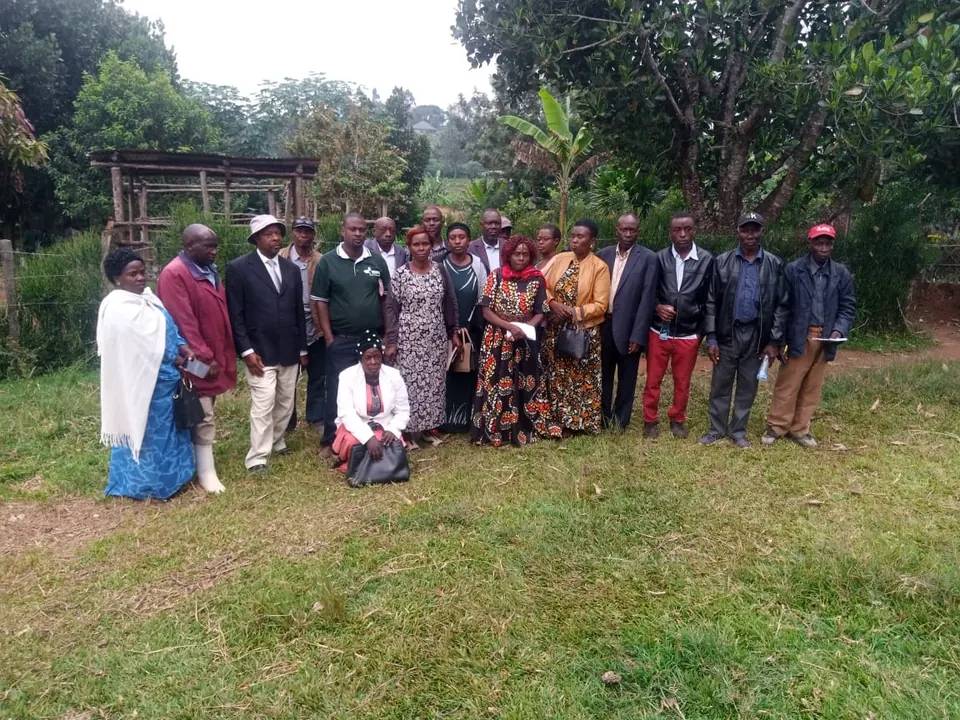
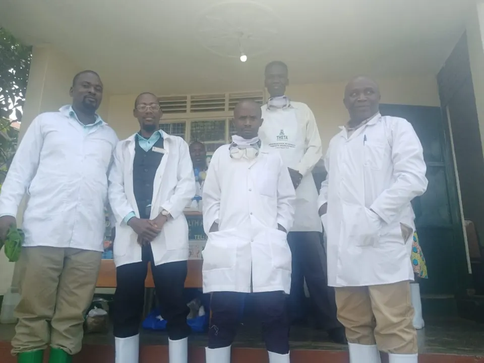

Farmers
Join TOPA to access training, markets and value addition.

Get involved
We invite farmers, investors, donors, researchers and buyers to partner with us in transforming Uganda’s organic sector, including our new Chia for Brain Capital initiative.
How you can engage
Join TOPA to access training, markets and value addition.
Support processing expansion, certification and export scaling.
Collaborate on research, climate-smart agriculture and nutrition programmes.
Source premium organic raw materials and essential oils.
Co-create knowledge and innovations with farmers.
Let’s talk
Tell us how you’d like to get involved and our team will get back to you.
